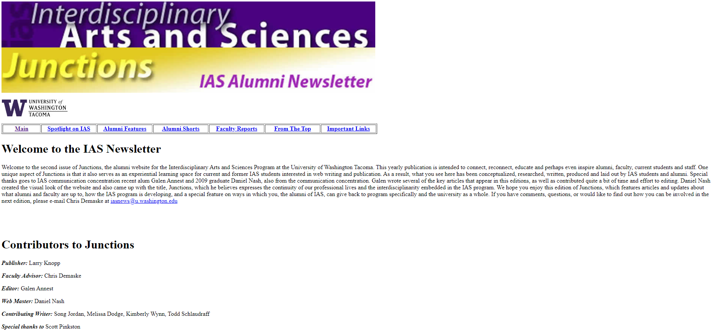
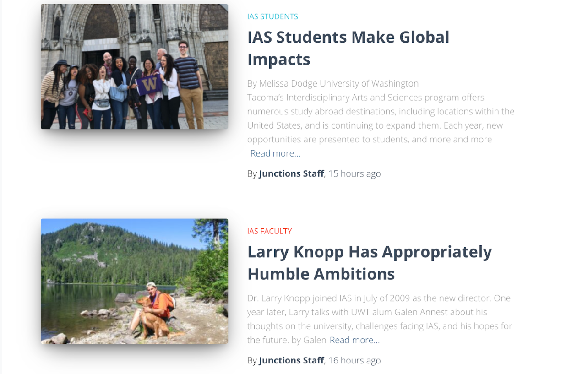
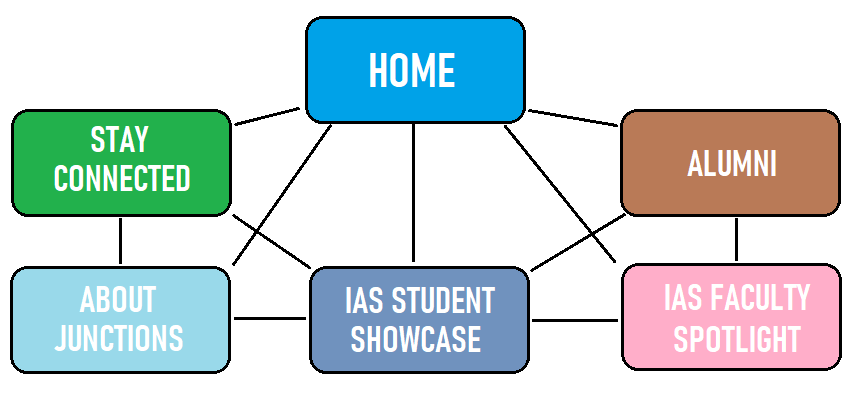

Andrew Narlock Design
This was my first web design project that I completed for my Advanced Web Design course while attending the University of Washington. The goal of this project was to implement user centered design and content management strategies to restructure and design an online alumni newsletter titled Junctions. This is a shot of the original newsletter. This project was completed by myself along with three classmates.

Here is a screenshot of the final landing page designed by my team. We used WordPress to implement the designs that we came up with. The final product was a major improvement from the original design.
As a team, we restructured the layout of the content into pages that were easy to navigate. Pages were broken up by the respective type of content that could be found on the website, such as articles, information about the school, and contact pages. This restructuring was also a major improvement to the continuity and user experience of the website.
It was important to focus on engaging with potential users and implementing calls to action, such as this contact section which allows users to connect with others through different social media platforms.
Here is a shot of a site map that was used to plan out how the content would be divided across the website. This became am integral step in the design process that provided us with an established structure that we could follow.
Here is a shot of the first wireframe that I ever created. I was focused heavily on breaking the content up into more exciting layouts compared to the original newsletter that was built using only basic HTML. While this one is basic and outdated, wireframing became an incredibly important step in the design process that allows me to consider different options for layouts and navigation.